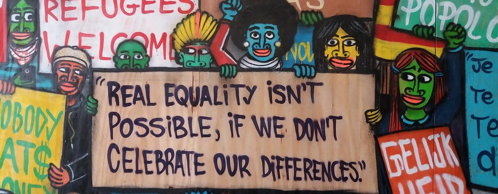

Quem Somos

A gente é um projeto que acredita que recomeçar em outro país não deveria ser tão difícil. Trabalhamos com refugiados e imigrantes que chegam ao Brasil e muitas vezes não sabem por onde começar — seja com o idioma, com trabalho ou com oportunidades.
O E.S.F. Tem como principal foco ações filantrôpicas volunárias que enriquecem a comunidade, desse modo, procuramos ajudar a sociedade pelas nossas pesquisas, podcasts, workshops, palestras e parcerias com diversas ONGs e Institutos que enriquecem a sociedade em conjunto com o E.S.F. sendo essas nossas principais formas de ação e ajuda.
Buscamos fortalecer talentos, ampliar oportunidades, contribuir para uma sociedade mais justa e mostrar que empreender também pode ser uma forma de recomeçar com dignidade, segurança e novas perspectivas de futuro.
Por que isso importa
A integração de refugiados vai muito além de assistência básica. Sem acesso a oportunidades reais, muitas pessoas acabam presas em ciclos de subemprego, invisibilidade econômica e exclusão social.
Quando o empreendedorismo entra como ferramenta, esse cenário muda. Ele permite autonomia, cria renda, fortalece comunidades e transforma histórias individuais em impacto coletivo. Mais do que gerar negócios, é sobre devolver controle e protagonismo para quem precisou recomeçar.
Como geramos impacto
Nosso impacto acontece quando informação vira ação.
Através de podcasts, palestras e workshops, ampliamos o acesso ao conhecimento e mostramos caminhos possíveis dentro do mercado brasileiro. Ao mesmo tempo, usamos o alcance midiático para dar visibilidade a essas histórias e mudar a forma como a sociedade enxerga refugiados e imigrantes. Não é só sobre ensinar, é sobre abrir portas, criar conexões e tornar oportunidades mais acessíveis.
Onde queremos chegar
Queremos expandir o alcance do projeto e fortalecer uma rede onde refugiados e imigrantes consigam não apenas se integrar, mas também crescer, inovar e liderar.
A longo prazo, buscamos influenciar a forma como o empreendedorismo social é visto no Brasil e ampliar o espaço dessas comunidades dentro da economia. A ideia é simples: quanto mais oportunidades forem criadas, maior será o impacto — não só para quem chega, mas para toda a sociedade.